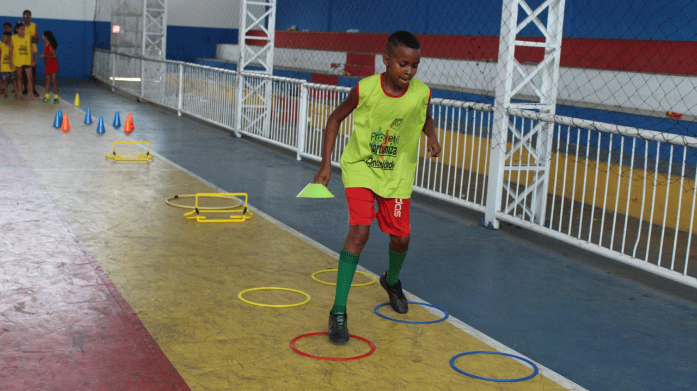
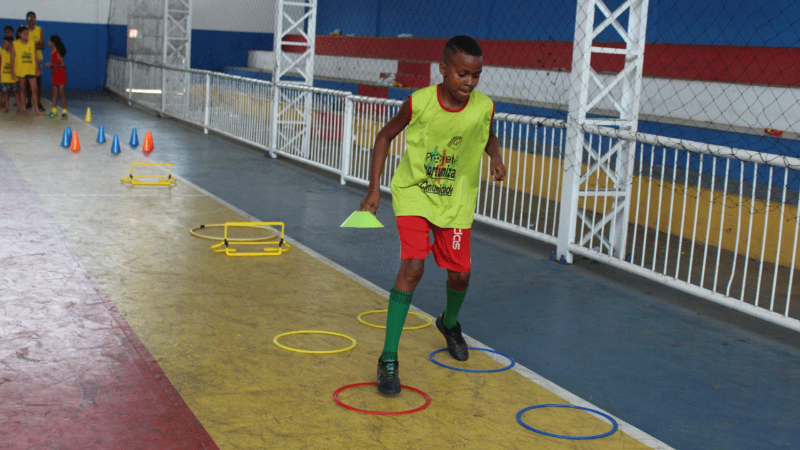

Notícias

Conexão Social deu início ao Projeto Oportunizar Comunidade Urbano em 2023
Na última terça-feira (21), a Associação Conexão Social deu início ao Projeto Oportunizar Comunidade Urbano no ano de 2023.

Conexão Social realiza ação em alusão ao dia da mulher em Lagoa de Itaenga
No último dia 8 de março, data em que é celebrado o Dia Internacional da Mulher, a Associação Conexão Social (ACS) esteve nas principais ruas de Lagoa de Itaenga realizando uma ação.
Integrantes da Conexão Social se reuniram com a Secretária de Saúde de Lagoa de Itaenga
A equipe da Associação Conexão Social (ACS) se reuniu com a Secretária Municipal de Saúde de Lagoa de Itaenga, Flávia Spinelli, na manhã da última quarta-feira (22), para tratar sobre o Projeto Conecta Vidas - Inclusão Digital e Social na Terceira Idade.
Quem Somos
A Associação Conexão Social (ACS) é uma organização da sociedade civil sem fins lucrativos que foi fundada em maio de 2005 no município de Lagoa de Itaenga, na zona da Mata Norte de Pernambuco. A organização possui o objetivo principal de mobilizar a população em busca da garantia dos direitos das pessoas em situação de vulnerabilidade social. Acreditando que a educação é uma poderosa ferramenta para a transformação social, a ACS atende em seus projetos, crianças, adolescentes, jovens, mulheres e idosos.
Missão
A organização busca desempenhar projetos que trabalhem no desenvolvimento social de crianças, adolescentes, jovens, mulheres e idosos, mirando o fortalecimento comunitário. Com isso, a Associação Conexão Social (ACS) procura garantir que as necessidades nas áreas de educação, saúde, habitação, transporte, lazer, cultura, esporte, trabalho e capacitação profissional sejam atendidas, a fim de promover o desenvolvimento integral desses grupos e, assim, transformar a realidade das pessoas atendidas.
Projetos
Conecta Vidas - Inclusão Digital e Social na Terceira Idade
A iniciativa promove a inclusão das pessoas idosas no meio digital e social. Segundo o “Pew Research Center”, em 2021, de aproximadamente 29 milhões de brasileiros idosos, apenas 5 milhões estavam conectados, ou seja, 80% dos idosos brasileiros não aproveitam os benefícios da tecnologia. Diante disso, o projeto surgiu para estimular o envelhecimento ativo e saudável dos participantes e, assim, fortalecer os seus vínculos comunitários. Um conjunto de atividades são oferecidas pela a ACS, inclusive atividades físicas como a hidroginástica, que tem por finalidade alcançar habilidades que resultem em um melhor desempenho dos idosos em suas atividades cotidianas.
"Meu nome é Claudineide Maria, sou mãe de Laryssa, beneficiária do Projeto Oportunizar Comunidade Urbano, as atividades do Projeto são muito boas para o desenvolvimento das crianças, elas usam o tempo onde poderiam estar no celular ou na tv, eu gosto muito também dos professores, por conta de todo o cuidado que eles tem com as crianças do projeto". Além de contribuir muito para as crianças."
Passaporte Digital - Formação, Tecnologia e Inovação
O projeto consiste na formação profissional de adolescentes e jovens na área da tecnologia e inovação. A iniciativa desenvolve atividades que têm por finalidade o alcance do conhecimento teórico e prático, além das habilidades e atitudes que resultem em um melhor desempenho e proatividade dos participantes em suas futuras carreiras profissionais. Com isso, o Passaporte Digital contribui diretamente na ampliação da oferta de mão de obra qualificada para diversos setores que necessitam da tecnologia, além de estimular o empreendedorismo dos participantes através de seu domínio dos princípios da tecnologia digital da informação e comunicação.
"Meu nome é Maria José eu quero dizer que amei esse Projeto VamoSimbora, e tenho me sentido muito bem, anteriormente eu me sentia muito mal, sentia muitas dores nas pernas, coluna e esse projeto tem me ajudado muito, achei muito bom e muito maravilhoso para minha saúde" foi muito importante."
Centro de Formação
O esporte é uma ação de representação do comportamento sócio-político e também uma das mais importantes expressões culturais que entrou definitivamente na pauta das exigências educacionais, sociais, políticas e econômicas da promoção humana e do desenvolvimento das sociedades contemporâneas. Partindo deste princípio, o Projeto Centro de Formação desenvolve um trabalho com adolescentes que estimula a evolução física e social dos participantes através da prática dos esportes, em especial da modalidade “futebol de campo”, melhorando sua saúde e qualidade de vida. Possuindo como objetivo principal a formação dos participantes como atletas e também como cidadãos.
"Meu nome é Maria Barbosa da Silva, e eu estou muito satisfeita com a hidroginástica, eu tenho um problema muito sério de veias em minhas pernas e eu não podia fazer muitas atividades em casa, depois que eu comecei a fazer a hidro, minhas pernas ficaram melhor, hidroginástica é algo muito importante, tanto para o idoso quanto para outras idades."
Oportunizar (Urbano)
O Projeto Oportunizar Comunidade Urbano trata-se de uma ação específica para crianças e adolescentes, com foco no incentivo a prática de esportes educativos e recreativos, do protagonismo e da integração entre as entidades da sociedade civil e das escolas públicas. Em um trabalho conjunto com as instituições educacionais, são oferecidas várias atividades atrativas aos participantes nos turnos em que não estiverem tendo aulas na escola. Com isso, a iniciativa realiza uma enorme transformação na rotina das crianças e adolescentes que participam, principalmente na intervenção contra a violência, os ocupando através do esporte inclusivo e, assim, salvando diversas vidas.
"Meu nome é Maria José Cabral, e eu estou muito satisfeita com esse projeto VamoSimbora, eu não entrei no início, fiquei aguardando a abertura de vagas e achava até que não iria surgir essa vaga por ser tão bom o projeto, mas felizmente abriu vaga e estou amando. Tenho que dizer algo importante, eu faço uso de insulina e as vezes acordava de madrugada me sentindo muito mal com a minha insulina baixa e após iniciar nas atividades do projeto não tive mais problemas com isso, então estou muito satisfeita e faço um apelo pedindo a continuação deste projeto."
Oportunizar (Rural)
Com o sucesso do Projeto Oportunizar Comunidade Urbano, surgiu o Projeto Oportunizar Comunidade Rural que trata-se de uma ação específica para crianças e adolescentes das áreas rurais, com foco no incentivo a prática de esportes educativos e recreativos, do protagonismo e da integração entre as entidades da sociedade civil e das escolas públicas. Em um trabalho conjunto com as instituições educacionais, são oferecidas várias atividades atrativas aos participantes nos turnos em que não estiverem tendo aulas na escola. Realizando também na área rural uma enorme transformação na rotina dos envolvidos, principalmente na intervenção contra a violência, os ocupando através do esporte inclusivo e, assim, salvando diversas vidas.
Sua doação é muito importante pra nós!
Banco do Brasil
Agência: 2239-X
Conta Corrente: 10432-9
Pix
07.599.362/0001-90
Localização
R. Daniel José da Silva, 20 - Vila Boa Esperança, Lagoa de Itaenga - PE, 55840-000
Telefone: (081) - 3653 - 2272
E-mail: administrativo@aconexaosocial.org